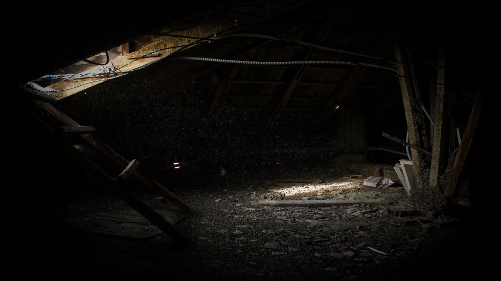

The Attic Space
The air is thick with dust. Old furniture draped in white sheets sits at odd angles.
creeeeak... scuttle...
A rocking horse sways gently on its own. Through the small, grimy window, you see stars you don't recognize.
What was left behind?